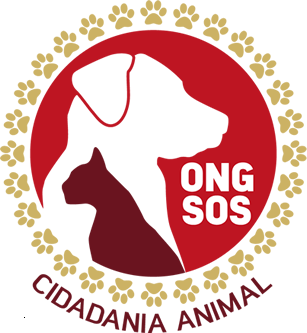
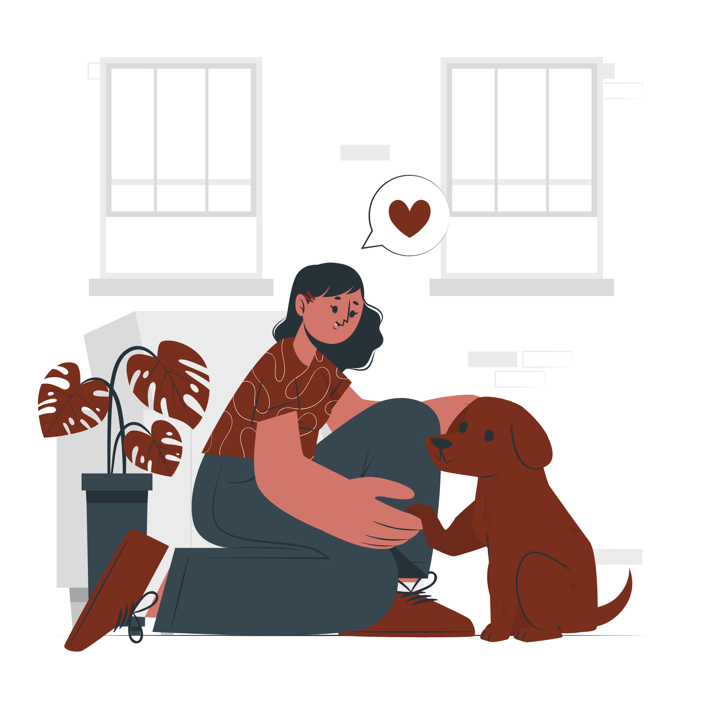
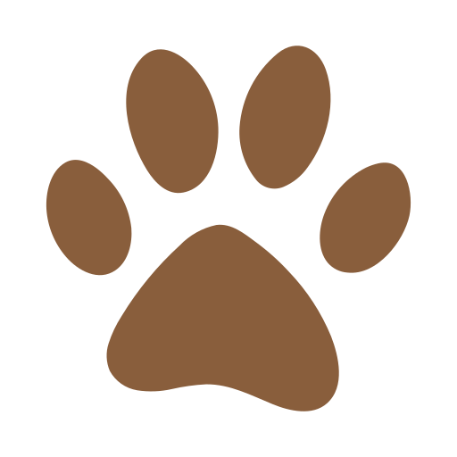
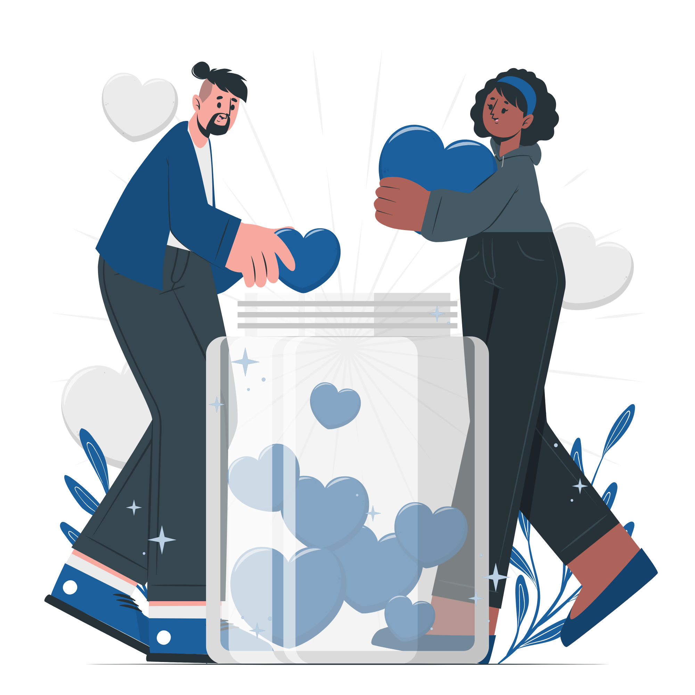
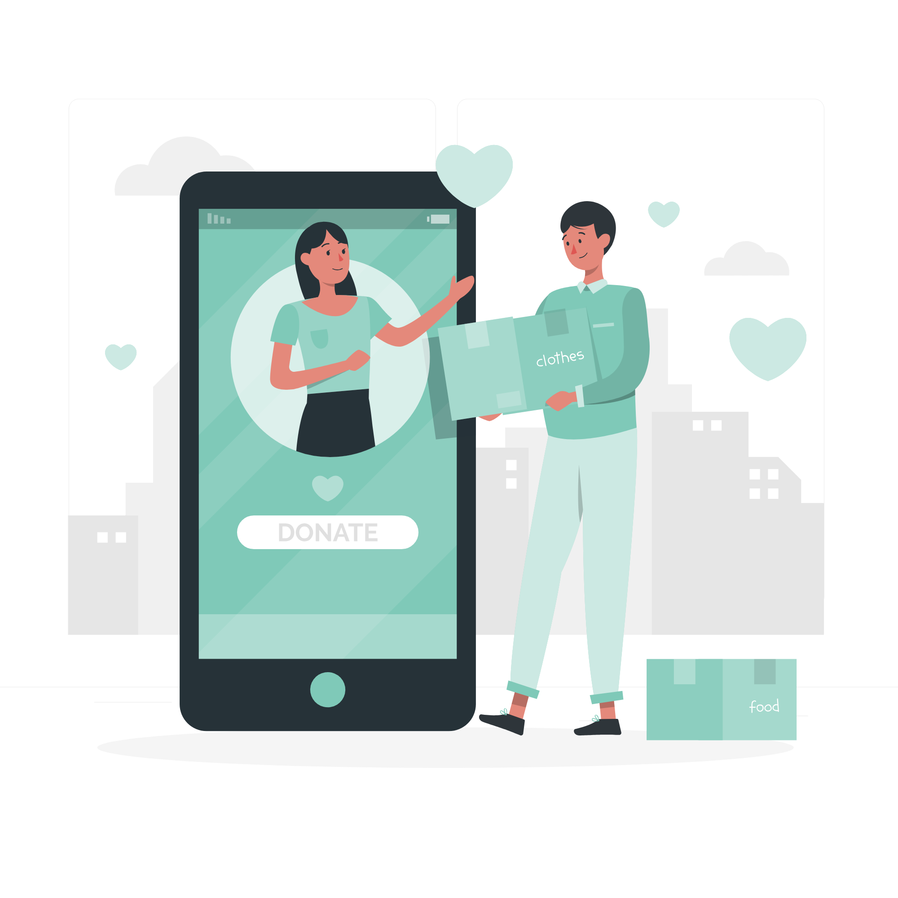
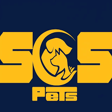
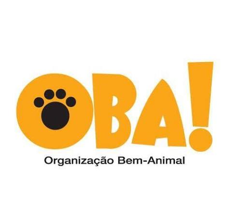
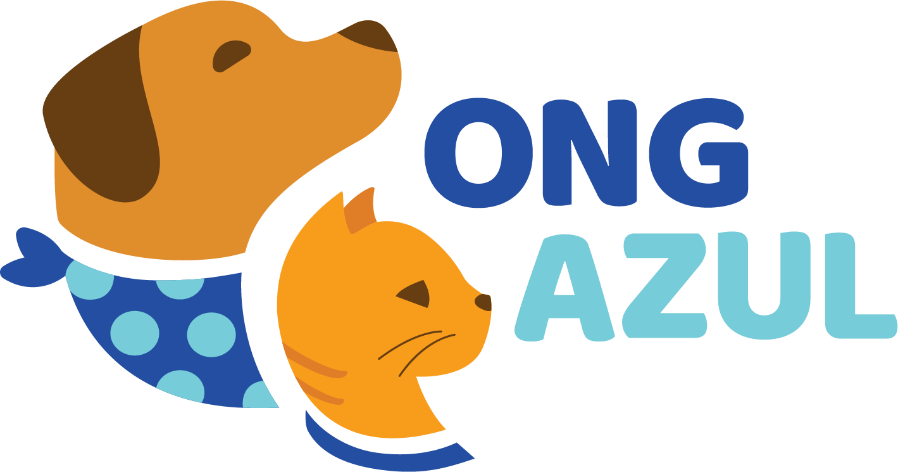
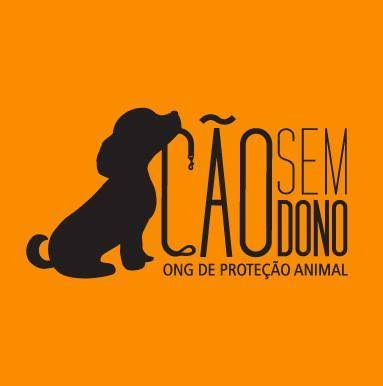
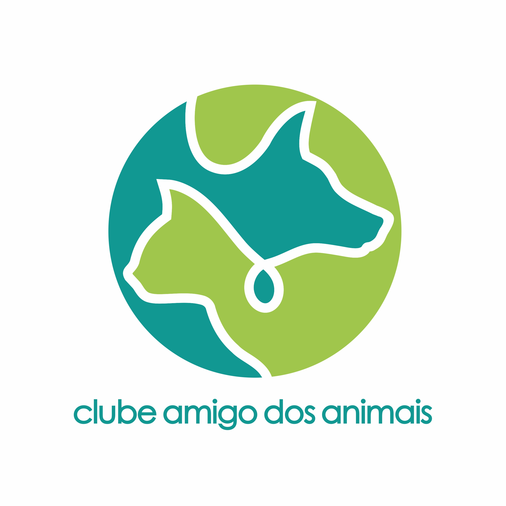

ONG SOS
ONG sem fins lucrativos dedicada à proteção, resgate e defesa do bem-estar de animais abandonados ou vítimas de maus-tratos.


Adoção, doação e voluntariado em um único lugar
Cadastre-se e aproveite


ONG sem fins lucrativos dedicada à proteção, resgate e defesa do bem-estar de animais abandonados ou vítimas de maus-tratos.

Organização dedicada ao resgate, recuperação e encaminhamento de cães e gatos abandonados ou vítimas de maus-tratos para a adoção responsável.

ONG sem fins lucrativos da Grande Florianópolis (SC) focada na proteção, conscientização e bem-estar de animais em situação de vulnerabilidade.

Organização sem fins lucrativos de São Paulo dedicada ao resgate, cuidado veterinário, abrigo e adoção responsável de cães e gatos em situação de abandono ou maus-tratos

ONG sem fins lucrativos fundada em 2005 e oficializada em 2008, dedicada a resgatar, cuidar e promover a adoção de cães abandonados ou vítimas de maus-tratos

ONG sem fins lucrativos fundada em 21 de agosto de 2010, com atuação no município de Araçatuba (SP) e região.